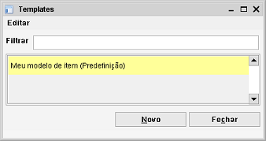
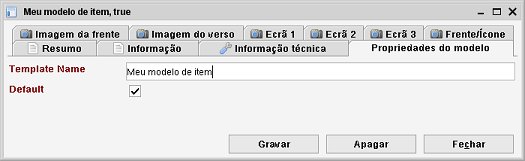
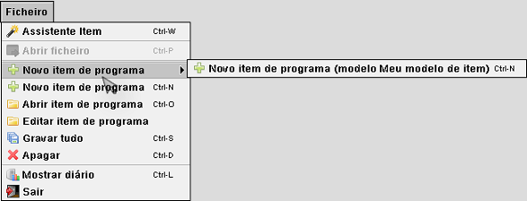

Modelos
Caminho de menu: Gestão > Manter <nome> modelos
Caso queira atribuir valores predefinidos a itens criados de novo pode defini-los num modelo. Pode encontrar esta funcionalidade no
menu Gestão.

Clique em Novo para criar um novo modelo. Abre um Formulário de item.

Repare que o formulário é praticamente idêntico ao normal, exceptuando o separador Propriedades do modelo,
onde encontra os campos Predefinição e Nome do modelo. Os campos explicam-se a si próprios.
O nome do modelo é obrigatório e tem de ser único. Preencha os campos que quer usar como predefinição
e clique em Gravar. O modelo está pronto a usar!
Modelo predefinido
Um modelo marcado como predefinido é sempre usado para criar um novo item. Pode não ter nenhum modelo ou pode ter um modelo.
Usar modelos não predefinidos
Um modelo predefinido é sempe usado, mas e se quiser usar um modelo não predefinido? Após um modelo ter sido definido
a barra de menu é atualizada e o modelo é tornado disponível.

Vá ao menu Ficheiro, submenu Novo item. Este submenu contém todos os modelos definidos. Selecione um para
criar um novo item usando o modelo.
Apagar o modelo
Selecione o modelo na lista, clique com o botão direito, selecione Apagar no menu.
Atualizar um modelo
Faça duplo clique num item da lista para o abrir. Modifique os valores, o valor predefinido ou o nome do modelo e clique em
Gravar.